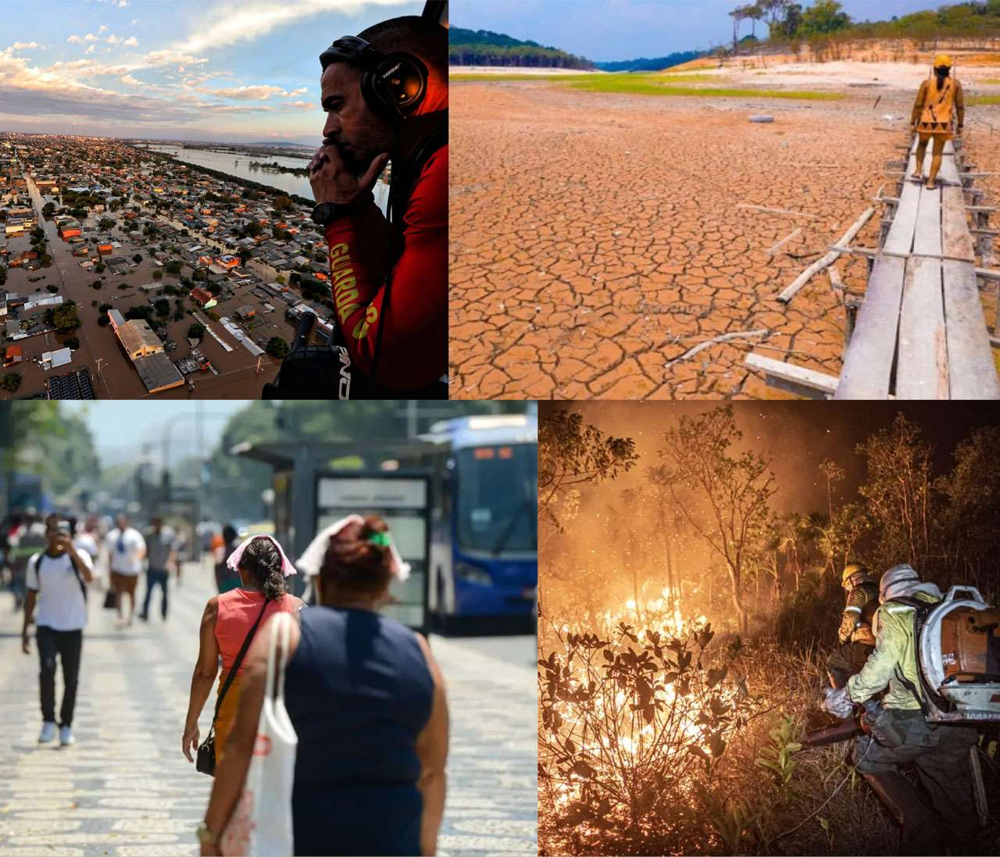
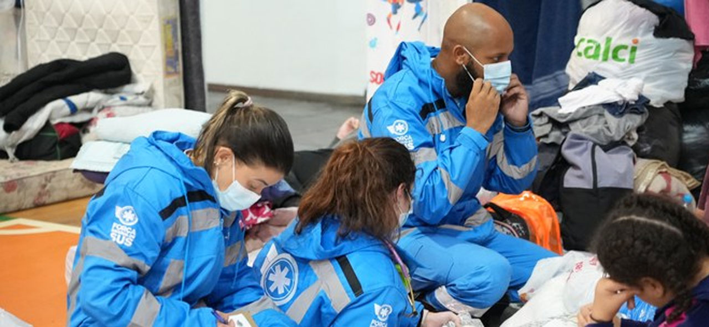
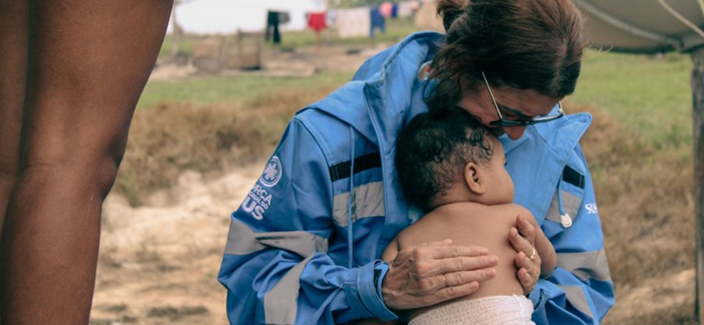
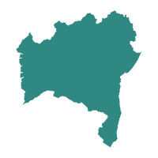

Conceitos principais: eventos climáticos extremos, emergência climática e emergências em saúde pública
Seja bem-vindo(a) à segunda aula do módulo I.
Na aula anterior, discutimos como as mudanças climáticas são resultado direto das formas de produção, consumo e organização social construídas historicamente pela humanidade, assim como impactam o ambiente e a saúde das populações. Agora, avançaremos na compreensão desse cenário por meio da definição de conceitos centrais: eventos climáticos extremos, emergência climática e emergência em saúde pública.
Ao final desta aula, você compreenderá os conceitos centrais apresentados e sua importância para a atuação da Atenção Primária à Saúde diante da crise climática e dos eventos cada vez mais frequentes no país.
Conceitos e denominações no contexto da crise climática
Os eventos climáticos envolvendo extremos de precipitação e de temperatura têm exigido adoção urgente de medidas estruturantes e coordenadas, tanto para redução de riscos quanto de adaptação do SUS. Para enfrentar cenários de perturbação ecológica e social ocasionados por esses eventos, as equipes de saúde precisam compreender conceitos importantes para organizar as ações da Atenção Primária à Saúde diante desse contexto.

A crise climática abrange um conjunto de situações com diferentes denominações. É comum encontrarmos na literatura expressões como eventos climáticos extremos, emergência climática, emergências em saúde pública. Nesse contexto, surgem alguns questionamentos.
Será que esses termos compartilham um mesmo conceito?
O que eles possuem em comum?
Qual é o papel da saúde diante desses cenários?
A seguir, clique em cada um dos termos para conhecer a definição.
São fenômenos meteorológicos ou climáticos que apresentam intensidade, duração ou frequência significativamente acima ou abaixo do padrão esperado para uma determinada região e época do ano. Incluem, entre outros, ondas de calor, ondas de frio, chuvas intensas, inundações, secas prolongadas, ciclones e tempestades severas, podendo causar impactos importantes sobre a saúde, o ambiente e a infraestrutura.
É o reconhecimento de que as mudanças climáticas representam uma ameaça grave e urgente à vida, à saúde, aos ecossistemas e às sociedades, exigindo a adoção imediata de medidas de mitigação das emissões de gases de efeito estufa e de adaptação aos seus impactos.
Constituem eventos ou ameaças com potencial para causar riscos e danos à saúde, com morbidade e mortalidade significativas, em âmbito local, nacional ou global. Demandam ações coordenadas, geralmente urgentes e, frequentemente, não rotineiras.
Agora que você conheceu cada conceito, vamos detalhá-los separadamente.
Eventos climáticos extremos
No contexto das mudanças climáticas, os eventos climáticos extremos têm se tornado mais frequentes e intensos, produzindo impactos importantes sobre a saúde, o ambiente e a sociedade. Entre eles, destacam-se as ondas de calor e de frio, os incêndios florestais, as secas severas, as estiagens prolongadas, as chuvas intensas, as inundações e os deslizamentos de terra.
No Brasil, entre o segundo semestre de 2023 e o primeiro semestre de 2024, o fenômeno El Niño, de intensidade moderada a forte, influenciou significativamente as condições climáticas do país, intensificando diversos eventos extremos. Durante todo esse período foram registradas sucessivas ondas de calor e recordes de temperatura em diferentes regiões.
No segundo semestre de 2023, destacaram-se a intensificação da seca, especialmente na Amazônia, com níveis historicamente baixos em rios como o Rio Negro, e o aumento dos incêndios florestais, que atingiram principalmente os biomas Amazônia, Cerrado e Pantanal. No primeiro semestre de 2024, ocorreram chuvas excepcionais no Rio Grande do Sul, que provocaram inundações e deslizamentos de terra de grandes proporções, afetando cerca de 95% dos municípios do estado e configurando um dos maiores desastres climáticos da história recente do país (FREITAS, SILVA e ROCHA, 2025).
Já no segundo semestre de 2024, o país voltou a registrar calor extremo, seca severa nas regiões Norte e Centro-Oeste e incêndios florestais de grandes proporções, favorecidos pelas altas temperaturas e pela baixa umidade. A estiagem levou novamente a níveis historicamente baixos dos rios da Bacia Amazônica.
O conjunto desses eventos evidencia que as mudanças climáticas, em interação com fenômenos de variabilidade climática natural, como o El Niño, têm ampliado a frequência, a intensidade e os impactos dos eventos extremos no Brasil.
- Leia mais sobre o assunto em “A era dos extremos já chegou ao Brasil”, avalia pesquisador do Cemaden.
Emergência climática
A emergência climática apresenta-se como uma crise que não pode ser tratada com base em eventos pontuais, ou seja, somente como mais inundações, secas, incêndios florestais, ondas de calor ou de frio. A Organização das Nações Unidas (ONU) entende a emergência climática como a necessidade urgente de uma resposta global para enfrentar a crise desencadeada pelas mudanças climáticas.
O termo, que ganhou força nos últimos anos, reflete a gravidade do cenário atual e a constatação de que a ação climática precisa ser imediata e drástica para evitar consequências catastróficas. No Brasil, diferentes ministérios têm empreendido iniciativas conjuntas e esforços para discutir a gravidade da emergência climática como uma crise global, os impactos nos diversos setores como economia, saúde, meio ambiente, energia, agricultura e as formas de ação e adaptação.
- Não deixe de ler a matéria “Caiu a ficha”: professor da USP apresenta a crise climática aos chefes dos Três Poderes.
No âmbito nacional, foi criado o Plano Clima 2024-2035, estruturado em três eixos complementares: Adaptação, Mitigação e Estratégias Transversais para Ação Climática. O Plano Clima é uma iniciativa conjunta da Secretaria-Geral da Presidência e dos Ministério de Meio Ambiente e Mudança do Clima (MMA) e da Ciência, Tecnologia e Inovação (MCTI). Tal iniciativa é voltada para a redução das emissões de Gases de Efeito Estufa (GEE) e a ações de adaptação, que buscam transformar cidades, setores, populações e ecossistemas para lidar com os impactos da mudança climática.
Além disso, o Ministério da Saúde lançou o Plano Setorial da Saúde – o AdaptaSUS, como parte essencial desse plano de governo, visando fortalecer a resiliência do setor de saúde frente aos impactos das mudanças climáticas, abrangendo o período de 2025 a 2035. Em ambos, a sociedade foi chamada a contribuir para construção de estratégias de mitigação desses impactos.
Emergência em saúde pública (ESP)

As Emergências em Saúde Pública (ESP) ocorrem quando há necessidade do emprego urgente de medidas de prevenção, controle e contenção de riscos, danos e agravos à saúde pública, devido à ocorrência de situações epidemiológicas, desastres e de desassistência à população. Vamos analisar a seguir cada uma delas.
Situações epidemiológicas
As situações epidemiológicas são caracterizadas por surtos, epidemias e pandemias produzidas por agentes infecciosos inesperados, cujo risco de disseminação em território nacional torna-se elevado. Também podem envolver o agravamento de doenças endêmicas, com aumento da ocorrência, da intensidade ou da área de transmissão, configurando situações de emergência, reemergência ou expansão para novos territórios.
touch_app CliqueToque em cada aba a seguir e entenda.
Situação em que há aumento acima do esperado na ocorrência de casos de evento ou doença em uma área, ou entre um grupo específico de pessoas, em determinado período.
Em 2024 foi confirmado o início de um surto de febre Oropouche, causado por uma nova linhagem viral que surgiu na região amazônica. Os surtos ocorreram no Amazonas, Acre, Rondônia e Roraima.
Envolve a ocorrência, em uma comunidade ou região, de um número de casos de uma doença ou de outros eventos relacionados à saúde que claramente excedem a expectativa normal. O número de casos que indica a presença de uma epidemia varia de acordo com o agente específico, tamanho e tipo de população exposta, a experiência prévia ou falta de exposição à doença, tempo e local de ocorrência.
A epidemia de dengue em 2024 atingiu todas as regiões do Brasil, com 6,5 milhões de casos (400% maior em relação ao ano anterior) e mais de 6 mil óbitos.
É uma epidemia que ocorre em todo o mundo, ou em uma área muito ampla, cruzando fronteiras internacionais, geralmente afetando grande número de pessoas. De modo geral, tem relação com a disseminação de uma nova doença ou o surto de uma doença em humanos em números (doenças e óbitos) claramente superiores ao normal, que podem chegar a diferentes países e ter um impacto mundial.
Em 11 de março de 2020, a Organização Mundial da Saúde (OMS) decretou a pandemia de Covid-19, doença respiratória causada por um novo tipo de coronavírus até então desconhecido. No Brasil, entre 2020 e 2022, foram registrados mais de 700 mil óbitos pela doença.
No Brasil, as Emergências em Saúde Pública (ESP) são regulamentadas por intermédio de portarias, que permitem aos estados e/ou municípios decretarem ESP para o enfrentamento de situações que fogem da rotina dos serviços de saúde e demandam ações específicas.
- Clique nos links e conheça as Portarias relacionadas a Emergências em Saúde Pública Portaria n.º 2.952, de 14 de dezembro de 2011, regulamentada pela Portaria de Consolidação n.º 1, de 28 de setembro de 2017.
Desastres
Os desastres são resultantes da combinação de quatro fatores principais:
- a ocorrência de uma ameaça, que pode ser de origem natural (inundação, deslizamento, seca) ou tecnológica (rompimento de barragem, vazamento de petróleo), de acordo com a Classificação e Codificação Brasileira de Desastres (Cobrade);
- as condições de vulnerabilidade socioambiental, que potencializam a propagação dessa ameaça;
- pessoas ou grupos populacionais expostos a essa ameaça; e
- insuficiente capacidade de resposta local para enfrentar os danos e reduzir os potenciais riscos.
Além disso, de acordo com o Centro Nacional de Monitoramento e Alertas de Desastres Naturais (Cemaden), um evento natural por si só não é um desastre, mas se torna um desastre quando interage com fatores de vulnerabilidade humana e social. Assim, em pesquisas sobre os desastres socioambientais sob o aspecto do sofrimento psicossocial em territórios vulnerabilizados, como área de atuação da APS, achados evidenciam...
"a intensificação do sofrimento em decorrência da perda de referenciais afetivos, territoriais e comunitários, além de mostrarem que a pobreza, a violência e as desigualdades ambientais prolongam os prejuízos causados e limitam significativamente as possibilidades de construção de estratégias de enfrentamento."
FREITAS e PAIVA, 2025
Em síntese, um desastre de origem natural envolve um fenômeno natural que, ao atingir uma população em situação de vulnerabilidade, causa grandes impactos (perdas materiais, pessoas desabrigadas, efeitos na saúde, óbitos) e consequências que a sociedade não consegue gerenciar por conta própria, exigindo medidas do poder público.
Em fevereiro de 2023 o litoral norte do estado de São Paulo vivenciou um desastre de grande proporção provocado por fortes chuvas, com inundações e deslizamentos, deixando 228 desalojados, 338 desabrigados e 64 mortos.
Desassistência

Desassistência é toda situação em que a saúde dos cidadãos é colocada em risco por incapacidade ou insuficiência de atendimento à demanda, ou seja, que extrapolam a capacidade de resposta da gestão distrital, municipal, estadual ou federal do SUS.
Em janeiro de 2023 o Ministério da Saúde declarou emergência em saúde pública para enfrentar a desassistência sanitária das populações em território Yanomami.
O que todos esses eventos têm em comum? Eventos climáticos extremos e emergências em saúde pública fazem parte de uma crise mais ampla – a emergência climática – e apresentam sérios riscos à saúde das populações em diferentes regiões do país. Para enfrentá-la, necessitamos de um conjunto de ações de gestão de riscos, envolvendo diferentes serviços do SUS em momentos distintos.
A emergência climática tem tornado o cotidiano dos serviços ainda mais desafiador, pois além de eventos cada vez mais frequentes e intensos, desastres e outras emergências em saúde pública podem ocorrer de forma simultânea ou sequencial.
touch_app CliqueToque no botão dos cards e reflita sobre alguns desses eventos.

BahiaEm dezembro de 2021, o sul da Bahia enfrentou fortes chuvas que causaram inundações históricas, agravando o cenário de emergência sanitária da pandemia de Covid-19. Mais de 50 municípios decretaram ESP, gerando desafios complexos à saúde e à resposta a desastres.
No Rio Grande do Sul, entre 2022 e 2024, ocorreram eventos sequenciais e simultâneos como estiagens prolongadas, epidemia de dengue, aumento de casos de síndrome respiratória aguda grave e chuvas extremas, que atingiram quase todos os municípios, destruíram hospitais e deixaram milhões de pessoas desabrigadas.
Situações como as que ocorreram na Bahia e no Rio Grande do Sul levam à sobrecarga do sistema de saúde local, provocando desestruturação dos serviços. Isso porque eles são demandados de forma intensa a agir em um novo evento quando ainda estão respondendo a outro em curso, ou até em fase de recuperação desse outro evento. Isso reforça a necessidade de preparação dos serviços e de suas equipes, bem como de investimentos em gestão de riscos relacionados à saúde para lidar com demandas simultâneas e/ou sequenciais, que geram diferentes riscos.
O mundo está se transformando de forma acelerada. Mudanças sociais, ambientais e políticas trazem intrinsecamente grandes incertezas sobre nosso futuro. Como parte dessa transformação, a emergência climática amplifica e agrava outras crises como a desigualdade, a fome, a má distribuição de recursos hídricos, as migrações humanas e os conflitos geopolíticos.
Diante da morosidade de iniciativas, tanto políticas como organizacionais, para enfrentar na mesma velocidade os desafios colocados, cabe ao SUS estar preparado para cumprir seu papel de garantir o cuidado integral à saúde das populações afetadas pela crise climática.
Nesta aula, discutimos como os eventos climáticos extremos – como ondas de calor e de frio, secas, inundações e ciclones – representam a intensificação dos impactos das mudanças climáticas e exigem respostas estruturadas do setor saúde. Conceituamos eventos climáticos extremos, emergência climática e emergências em saúde pública, para compreender que as mudanças climáticas constituem uma crise ampla, contínua e de alcance global, com impactos sociais e ambientais profundos. As emergências em saúde pública demandam medidas urgentes diante de desastres, situações epidemiológicas e de desassistência.
Além disso, conhecemos as iniciativas governamentais de enfrentamento, como o Plano Clima e o AdaptaSUS, e refletimos sobre a necessidade de organização e fortalecimento do Sistema Único de Saúde para atuar na gestão de riscos, na adaptação e na garantia do cuidado integral às populações diante de cenários cada vez mais complexos e desafiadores.